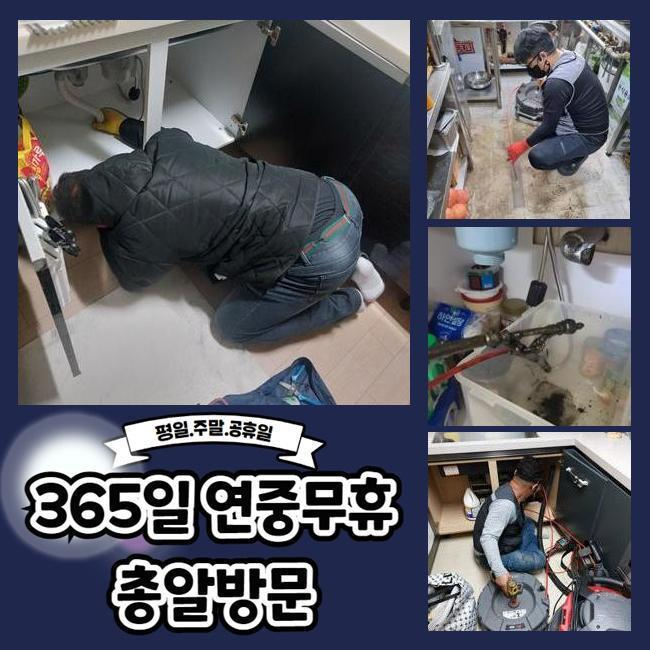
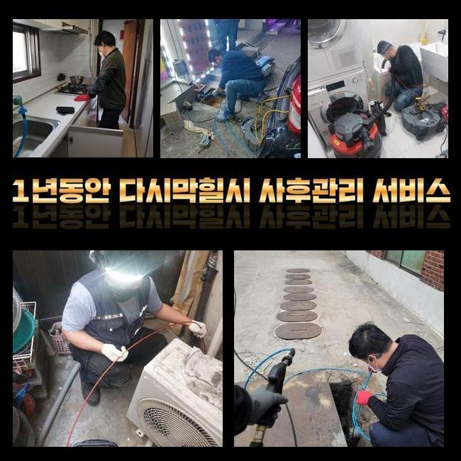
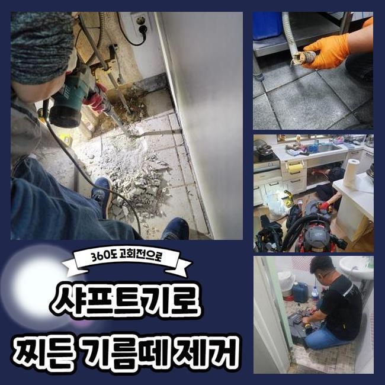
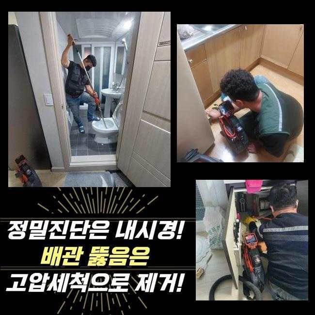
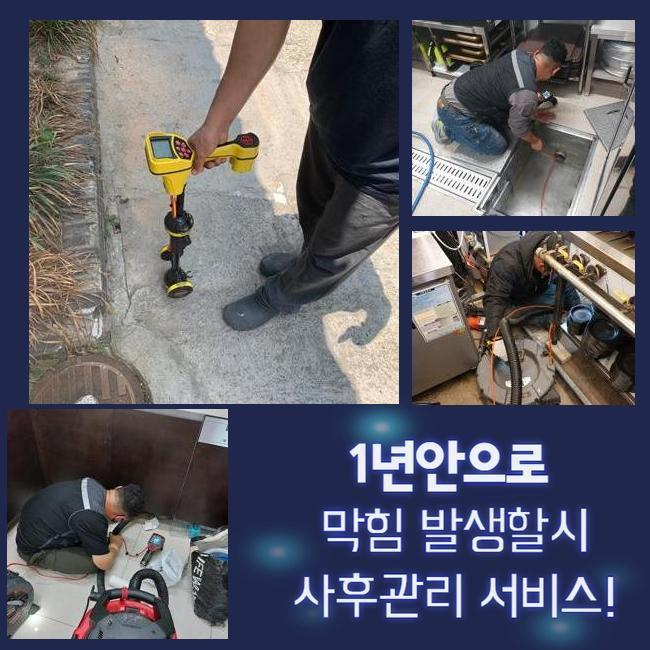
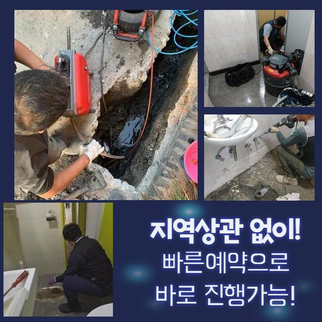
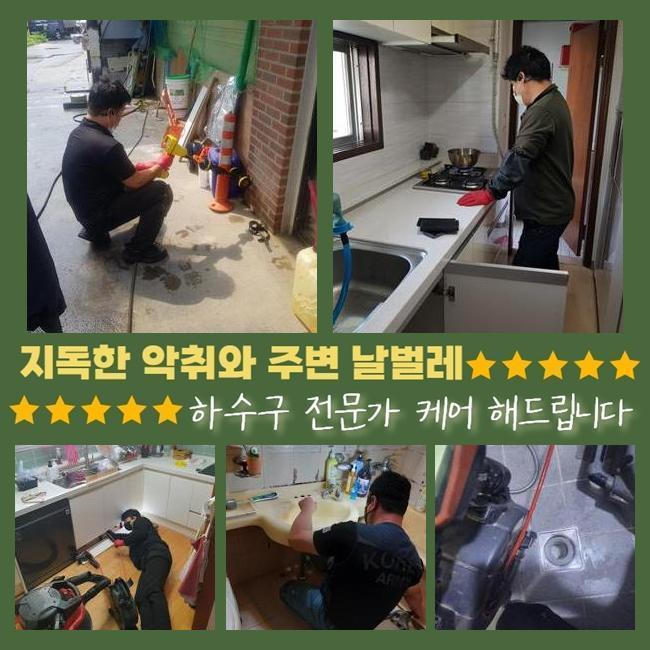

🏠 광주 탄벌동하수도뚫음 남종면 하수구뚫는곳 출장설비
광주 남종면 하수구막힘 전문 시공 후기

📋 작업 개요
- 위치: 광주 남종면, 남종면, 광주
- 서비스 유형: 하수구막힘, 배관막힘, 집수정막힘, 역류해결, 뚫는업체, 배관청소, 고압세척
- 작업 일시: 2025. 1. 8. 9:23
- 업체명: 하수구수사대 (010-5615-2118)
🔍 문제 상황
광주 탄벌동하수도뚫음 남종면 하수구뚫는곳 출장설비
저희들은 최근의 상가건축물의 배수정체를 해결하고자 방문을 드렸는데요
상담을 진행했던 고객의 설명을 듣고 저희업체는 상가라인의 화장실내부에서 만성적인 이물질 역류 통수오류를 해결하고자 해당 장소에 도달했어요
의뢰자는 이것때문에 다양한 민원들을 감당하고 계셨었죠
현재의 사태들을 조속히 조치해줘야했기에 저희들은 도착 후 문제의 장소를 진단했습니다
여지껏 축적되는 슬러지들이 하수도를 막아선걸 목격하고 빠르게 시정했는데요
그간의 사례로 추측하니 해당 고형물은 보통 공동배수관에서 발견되므로 해당 증상들이 생겨난 걸로 생각했죠
그리하여 신속하게 바깥으로 나간 후 이상징후가 포착된 배수관의 스팟을 특정시키기위하여 검수들을 실시했죠
탐지기기를 이용하여 배관의 지점을 찾아주었고 안을 살피니 오염된 정도가 심각했던 모습이였어요
내부에서 시작되어 누적된 오수들의 잔해들과 밖에서 쏟아진 폐기물들도 마구잡이로 혼합되었죠

🔎 원인 분석
💡 전문가 진단: 정밀 진단 장비를 사용하여 슬러지의 고착 여부를 판명하고 타격/세척 작업을 실시했습니다.
이러한 배수정체를 해결할 목적으로 즉각 적합한 대응들을 실시했고 상가빌딩의 시설을 안정적으로 유지되게끔 했죠
어느 한 구간에 잔해물이 누적되면 많은 통수장애를 유발하므로 해결들을 미루지않는게 필요하죠
진단을 실시하니 잔해물이 구간별로 자리한것을 체크하게되었어요
폐기물들은 지속적으로 쌓인다면서 돌과 같이 크기를 키워가고있었습니다
고착화와 이물퇴적으로 인하여 배수에 치명상이 나타났다고 판단했죠
그렇기에, 장치 사용을 해서 배수구를 청소해주었어요
장비들을 통해 배수구를 세척해줄때에는 고수압의 세척들이 중요하겠습니다
만약에 집수정 등에 이물들이 존재할 경우 보통의 방법으론 개선이 안될수 있는데요
이 부분은 염두에 두고, 고압수청소로 효율적으로 고착물들을 싹쓸이하는게 실시되야했습니다
세척을 거치면 하수관을 청결하게 이용하게되며 오류가 야기되는 것을 앞서서 예방합니다
해당 문제들을 파악하고, 배수관을 시공하는 시점에는 고압 세척과정을 염두에 두시는 것도 추천드려요

🔧 작업 과정
덧붙여 잔해들이 안쌓이게 때에 맞춰 유지시켜주는게 요구되고 적절하게 대처해준다면 쉽게 통수오류를 해결할 수 있습니다
그렇기에 오류가 발생했을 때는 안전한 해결책이 대두되고 전문진의 도움들로 탄탄한 배수 과정들을 수립하는게 중요한데요
관리들도 먼저겠지만 전문적인 솔루션을 통해 배관을 깔끔히 만들어주는게 실질적인 방법들이 됩니다
청소수행을 제대로 이행하려면 구조적설계와 특징들을 살펴야하겠습니다
하수도의 경우 여러 소재로 구성되며 시간이 흘러 사용기한이 하락하기에 과한 힘을 쏴주는것은 위험이 따릅니다
소재별 특성과 해당 장소의 데이터를 바탕으로 올바른 방식들을 써야하죠
해당 사항들을 잘 지키면 고압수청소로 이상없는 결과까지 꾀할 수 있습니다
운용했던 석션도구는 흡입을 실시해 배수관의 잔여물질들을 실용적으로 제거했습니다
석션바구니에 빨려나온 오염원의 잔재들을 확인하였고 내시경기기를 투입시켜 구석구석 확인하니 흡착물들이 상당해 배수과정이 순탄치 않았습니다
이를 확인하고 고수압의 방식으로 저희전문진은 해당 장소에서 발생한 막힘들을 조속하고 효율적으로 해결함과 동시에 구조상태와 이물의 양상을 파악해보고 시공을 해주어 알맞는 물의 흐름을 유지시켰죠
이것은 대다수 잔해물이 군데군데 침전되서 축적되는 문제들로 내측으로부터 좁혀지게되어 유수흐름들이 불가한 양상들이 야기되게됩니다
이럴땐 전문업체들의 도움으로 내시경기기를 이용해 깊숙한 부분까지 진단하고 명확한 까닭들을 없애주는것이 이행되어야해요
고압수청소를 진행하며 저희들은 타겟이되는 부위로 호스들을 투입시켰고 입구쪽 라인에선 뭉친 기름때가 줄기차게 빠져나가는것을 보게되었어요
반대로 기름덩어리들이 자리하고있는 3미터 포인트에선 이물들의 형상을 체크해보면서 분사의 압력을 조정하여 해당 과정들을 진행해주었는데요
슬러지들의 흡착이 심했기에 온수 고압수청소를 진행시켰는데 안전관련 수칙을 지켜내며 기름때들을 수습했습니다
막히는 사례는 갑자기 발생해 수많은 고충을 발생케해요
오수가 안빠지는 문제의 경우 상당수 아직 이물들이 점차 쌓여 나타나기에 조속하게 통수오류를 시정해야해요


✅ 작업 완료
의뢰자의 고충을 덜고자 조속히 조치하겠습니다
통수장애를 조사하고 올바른 방법들을 선별해서 시정에 착수합니다
신속한 대응들이 우선고려사항이라 아무 조치 없이 방임하시면 안됩니다
도움들이 필요하다라면 시간 상관없이 전화주세요
결함이 발생하면 안정적으로 대응하여 안전성을 갖추고 속 시원한 흐름을 지키겠습니다




⚠️ 하수구 배관 막힘 예방 및 관리 가이드
- ✅ 머리카락, 비닐, 물티슈 등 물에 분해되지 않는 이물질은 하수구 유입을 절대 금지해 주세요.
- ✅ 하수구 거름망을 씌우고 모여진 이물질은 주기적으로 쓰레기통에 바로 비워주셔야 합니다.
- ✅ 배관 노후가 심할 경우 이물질이 더 쉽게 걸리므로 주기적인 배관 세척(고압세척 등)을 권장합니다.
- ✅ 작업 후 1년 이내 재발 시 하수구수사대에서 무상 A/S 보증 서비스를 제공합니다.
💡 핵심 정리
- 확실한 장비 작업(내시경 점검 및 샤프트 스케일링)으로 원인을 뿌리 뽑습니다.
- 작업 후 1년 이내에 동일한 부위 재발 시 100% 무상 A/S 서비스를 보장합니다.
- 서울 · 경기 · 인천 전 지역에 24시간 언제든 긴급 출동할 수 있도록 항시 대기 중입니다.
❓ 자주 묻는 질문 (FAQ)
🚨 광주 남종면 하수구막힘 문제로 고민이신가요?
정확한 원인 진단과 확실한 시공으로 재발 없는 해결을 약속드립니다.
24시간 긴급 출동 | 서울 · 경기 · 인천 전지역 | 1년 내 재발 시 무상 A/S